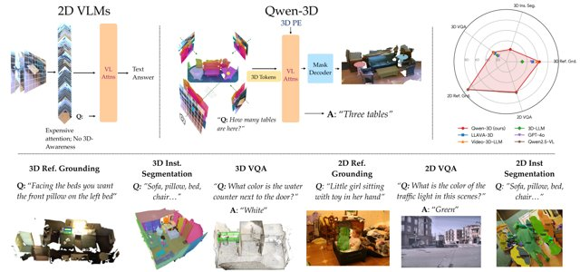
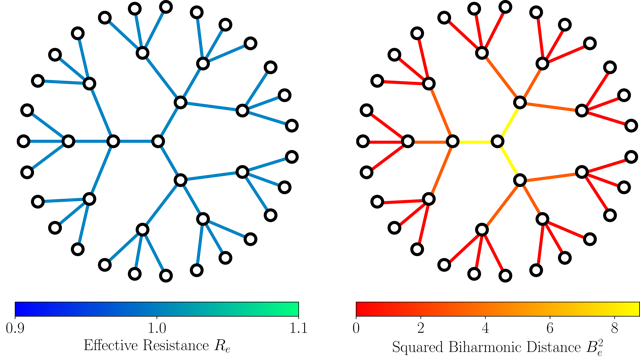
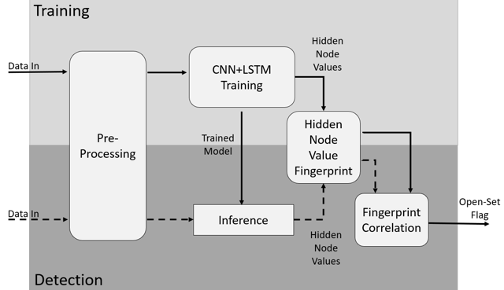

Research
I'm broadly interested in computer vision and its intersection with robot learning. Lately, I've been thinking about how to develop models that can ground their reasoning in spatial representations derived from perceptual input. I'm curious to see how this extends to embodied settings—specifically, how can we get agents to build persistent scene representations, reference their visual memory, and reason natively in space rather than text alone.
|
|

|
Qwen-3D: A Generalist 3D Vision-Language Model for Spatial Understanding
Lucy Lin*,
Ayush Jain*,
Yifan Liu,
Katerina Fragkiadaki
ECCV, 2026
project page
/
arXiv
/
code
A geometry-aware LMM that compresses multi-view observations into world-space tokens, attends with 3D Rotary PE, and grounds language via a query-based mask decoder for 3D grounding, segmentation, and VQA.
*Equal contribution
|
|

|
Biharmonic Distance of Graphs and its Higher-Order Variants: Theoretical Properties with Applications to Centrality and Clustering
Mitchell Black,
Lucy Lin,
Weng-Keen Wong,
Amir Nayyeri
ICML, 2024
arXiv
/
code
We study biharmonic and k-harmonic distances on graphs, connect them to global topology and connectivity, and use them for edge centrality and graph clustering.
|
|

|
On the Extraction of RF Fingerprints from LSTM Hidden-State Values for Robust Open-Set Detection
Luke Puppo,
Weng-Keen Wong,
Bechir Hamdaoui,
Abdurrahman Elmaghbub,
Lucy Lin
ITU Journal on Future and Evolving Technologies, 2024
DOI
We extract RF device fingerprints from CNN+LSTM hidden-state patterns to improve open-set detection of unauthorized wireless transmitters.
|
|
{kind=link}